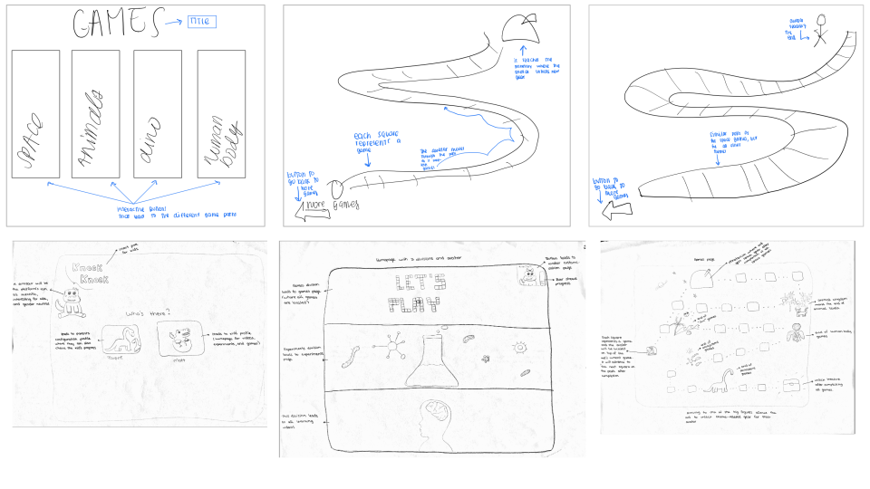
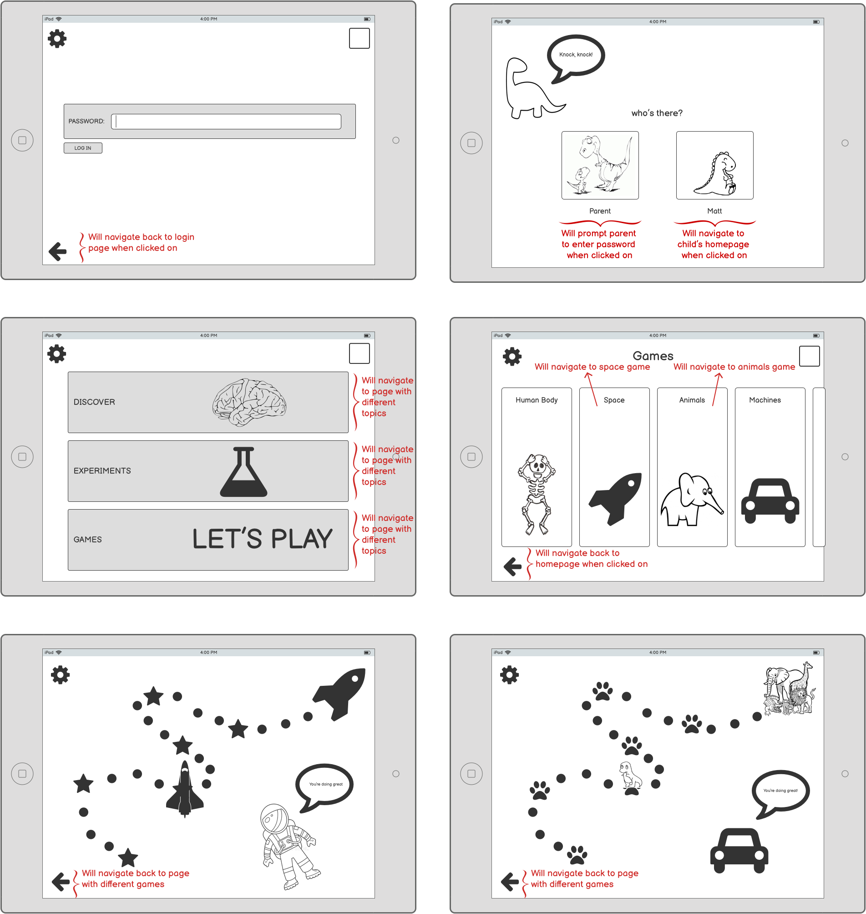
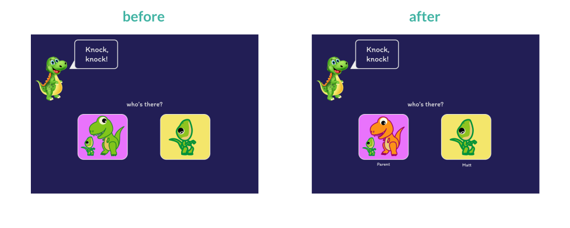
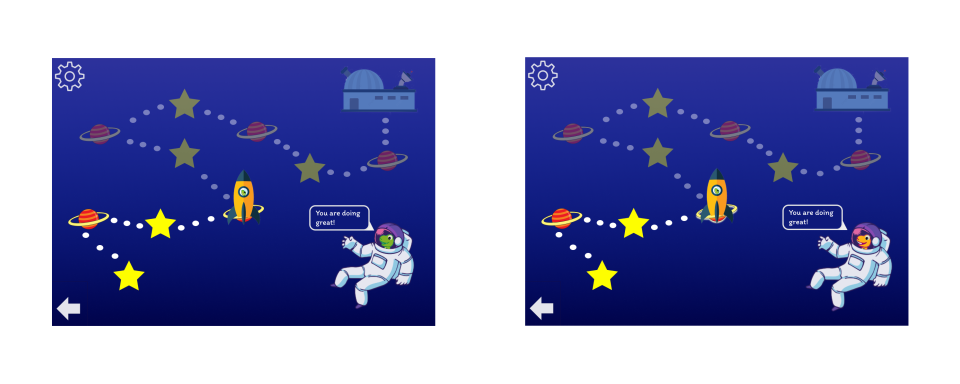
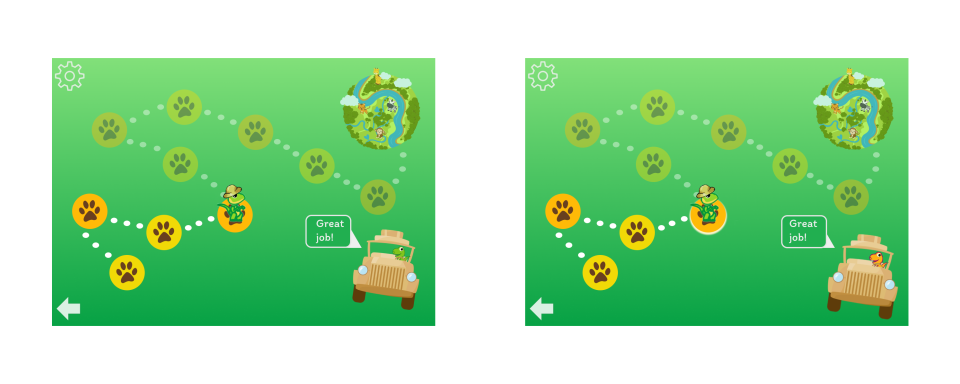
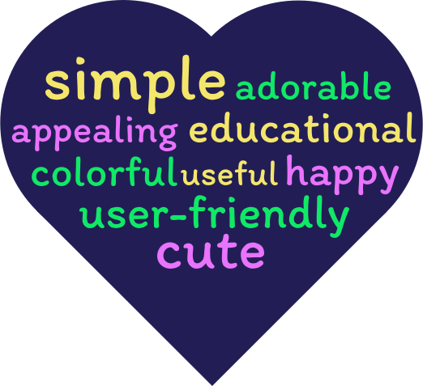

If someone told you to create an educational app for children, what would spring to mind? How would you make an
app both educational and fun?
Images? Bright colors? Exploding science experiments? Dinosaurs?
This is what my teammates and I were trying to explore. For this project, we had to choose a startup and design a
user interface (UI) for that startup without looking
at their existing UI. The only thing we could work off of was their concept.
The startup we chose is Tappity, an app for kids which teaches 100+
science topics with experiments and games. The app is specifically for children aged 4-10 and explores topics,
such as
space, animals, the human body etc.
In this article, we're going to walk you through our brainstorming, how we created an interactive prototype, and
an analysis of our
results after conducting user testing.
My teammates were Deniz Ozturk, Nicole Cid, and Mariana Alvaro ♥
sketching + wireframing
sketches
First, we made a bunch of 5-minute sketches to get the ideas flowing. We tried different layouts and designs,
and brainstormed which elements users would be able to interact with.

Before creating low-fidelity wireframes, we discussed our individual sketches and came to the following decisions:
We thought that it would be fun and engaging for kids to let them create and customize
their own avatar.
Instead of a human avatar, we wanted a more interesting and gender-neutral creature. Very quickly it became
crystal clear - it had to be a dinosaur!
We then decided that for consistency, the app's icon should be a dinosaur as well.
We decided to cheer up our login page with a "knock, knock, who's there" joke which prompts the user to
choose between logging in as the parent or the child
We knew that we wanted to split the homepage into three categories: games, experiments, and educational
videos. However, we spent a lot of time deciding which word to use
for educational videos. We thought that "learning" or "classroom" would put off children so we went with
"Discover".
Initially, we planned to have a "Games" button which would lead directly to a path made up of individual
games across different themes e.g. animals, space, machines etc.
Once a child completes all games for a specific theme, they would arrive at an endpoint where they would collect
some sort of gear for their avatar. We believe this would incentivize
children to continue playing and we used the same logic for educational videos and experiments.
Later on, we realized that it would be more intuititve and organized to divide the games into topics and then
create
a topics page before navigating the user to the games path. For example, if the user clicks on "Animals", it
would take them to
a path made up of only animal games. This would also allow kids to choose which games they want to play.
low-fidelity wireframes
After combining our ideas from our sketches, we created low-fidelity wireframes using Balsamiq.

interactive mockups
After completing our wireframes, it was time to turn our ideas into a high-fidelity interactive mockup. And here you
have it friends - Tappity App.
Click on the arrows in the top-right corner for full screen.
critique feedback
The mockup you see above is our final draft after receiving feedback from Nikolas Klein, an industry Product
Designer, and other students in our UI/UX
class at Brown.
The following is a summary of the critique:
Make it more clear which is the parent dinosaur and which is the child and use this parent-child
relationship throughout the app.
Originally, on page 1 (login page), both the parent and child dinosaurs were green. We later changed the parent
to orange and for consistency, we also
made this change on page 8 and 9 to the astronaut and safari tourguide dinosaurs. This makes it seem as if the
child's parent is cheering them on by the "You are doing great!" speech bubble on pages 8 and 9.
In the game path, highlight where the dinosaur is standing to make it more clear as to which game the
child is meant to complete. We decided to highlight the game icon with a drop shadow.
Overall, Nikolas and our peers liked the choice of colors and graphics and said that the app was easy to
navigate.
The changes we made between before the critique and the final mockup above are
displayed below:



user testing
After creating our interactive high-fidelity mockup, how do we know if it's actually user friendly? This is where
user testing comes into play.
We submitted our mockup to a remote user testing service (usertesting.com) and had 3 users test our interface prototype.
We gave all 3 users the following tasks and scenario:
scenario
Imagine you're a child and you want to play a "Space" game and then an "Animals" game. Keep in
mind
that this is a mockup made with prototyping software and not a real website. However, like a real application, you
will be able to interact with elements on each page to help you achieve your goal. Since it's a prototype, you
won't
actually be able to play a game but they would be included in the real application.
task
Play a "Space" game and then an "Animals" game.
subtasks
Without leaving the homepage, what are your initial impressions of the website? Explain your answer.
Find where you can play a "Space" game.
Now, find where you can play an "Animals" game.
What 3 words would you use to describe this application? Explain your answer.
results
NOTE: when creating our test on usertesting.com, we chose tablet as the device that users
should
use. However, we were unaware that despite specifying this, users without tablets would still receive this test.
This caused formatting issues for 2/3 of our test users, since they were trying to open up the prototype on a
computer/mobile instead of a tablet. If we were to conduct this test
again, we would either specify that using a tablet is highly recommended in the scenario or
change our prototype so that it is responsive to different devices.
task 1 - without leaving the homepage, what are your initial impressions of the
website?
"educational game"
"easy to operate"
"big pictures"
"obvious and clear"
“I don’t really consider this a homepage”
sound on for some giggles!
task 2 - find where you can play a "space" game
The time to complete this task was:
user 1- 0:00 (due to formatting issues, this user could not complete the task)
user 2- 0:59
user 3- 1:23
task 3 - find where you can plan an "animals" game
We believe that the time taken to perform the next task was significantly shorter because of
increased
user memorability as the test users got to know the app a bit better:
user 1- 0:00 (due to formatting issues, this user could not complete the task)
user 2- 0:15
user 3- 0:33
task 4 - what 3 words would you use to describe this app?

post user test questions
For each user, we included post-test questions about their experience as a whole. Below is a summary of each
question:
What frustrated you most about this site?
N/A (formatting issues prevented this user from fully exploring all of our pages)
user 2- no answer
user 3- formatting issues (user opened prototype on mobile instead of tablet)
If you had a magic wand, how would you improve this site?
option to personalize name/avatar (note: we did not include this in our prototype but that was our intention
for the real app)
user 2- no answer
user 3- make app responsive to different devices
What did you like about the site?
user 1- use of cartoons makes it easy for kids to recognize category, especially if they cannot read well yet.
Also liked how buttons were diffent colors
user 2- no answer
user 3- color, good usability, big pictures, cute animals, lots of playing options
How likely are you to recommend this site to a friend or colleague (0=Not at all likely, and
10=Very Likely)?
user 1- 8
user 2- no answer
user 3- 8
user test videos
If you would like to watch the user testing videos in their entirety, the links are provided
below.
user 1
(note that user1 had serious formatting issues)
This project taught me the importance of thinking about not just what you're designing but who you're
designing for. It was super interesting and exciting to put ourselves in the shoes of a child.
This project also made me think about interaction design and how to convey to a user that an element is
interactable on different devices. For example, elements can change when hovered over on a computer screen,
but a user can't hover on a tablet or mobile. Moreover, the feedback we received from the user testing portion of
this project was extremely helpful. It made me realize that things that might be obvious to the designer may not
be to the user.